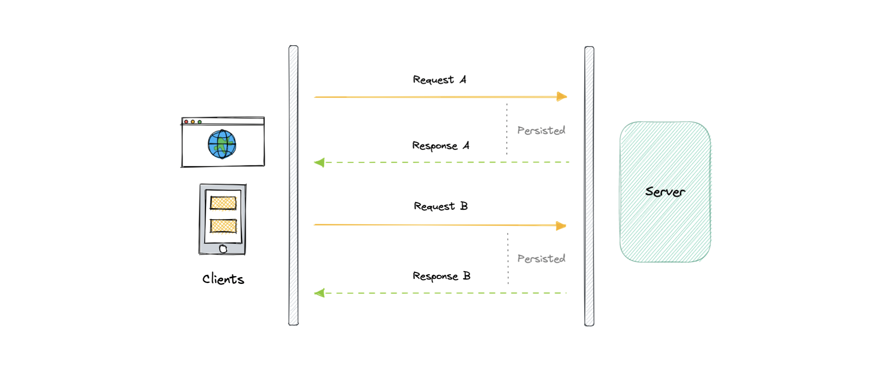
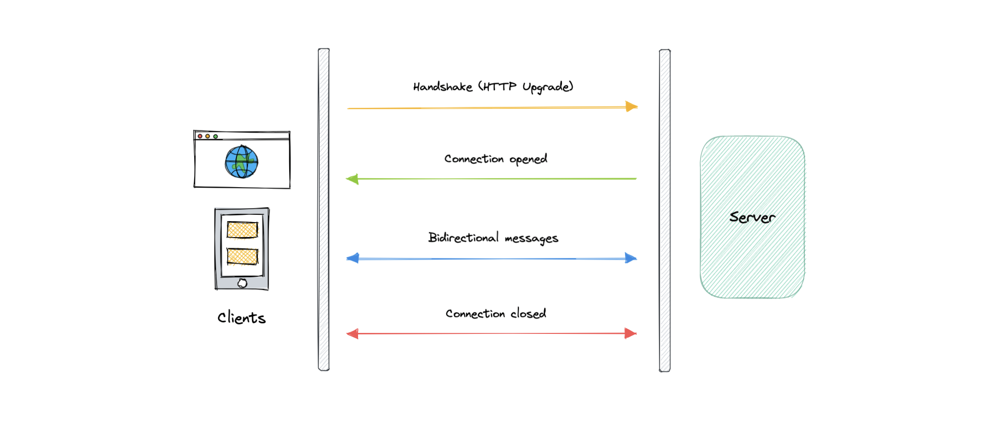
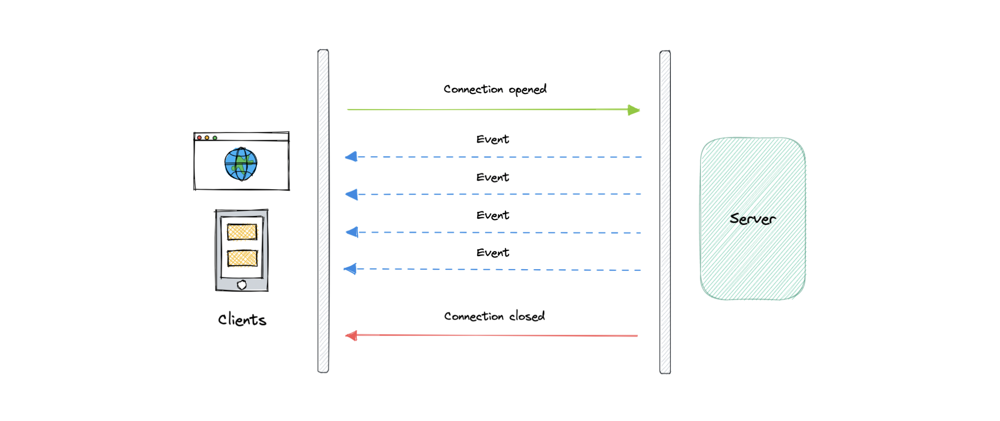

Giao tiếp & API
Cách các thành phần "nói chuyện": ba kiểu API (REST, GraphQL, gRPC) và ba kỹ thuật server đẩy dữ liệu real-time (Long polling, WebSockets, SSE).
API là gì?
API (Application Programming Interface) là tập định nghĩa & giao thức để xây dựng và tích hợp phần mềm — như một "hợp đồng" giữa bên cung cấp và bên dùng thông tin.
REST
REST (Representational State Transfer, Roy Fielding 2000). Đơn vị cơ bản là resource. Ràng buộc: Uniform Interface, Client-Server, Stateless, Cacheable, Layered system, Code on demand (tùy chọn).
HTTP verbs: GET, POST, PUT, PATCH, DELETE, HEAD. Mã phản hồi: 1xx (info), 2xx (thành công), 3xx (redirect), 4xx (lỗi client), 5xx (lỗi server).
GET /users → lấy tất cả user
GET /users/{id} → lấy 1 user theo id
POST /users → thêm user mới
PATCH /users/{id} → cập nhật user
DELETE /users/{id} → xóa userGraphQL
Ngôn ngữ truy vấn cho API (Facebook 2015) — client lấy chính xác dữ liệu cần, không hơn. Đơn vị cơ bản là query. Khái niệm: Schema, Queries (& mutation), Resolvers.
type Query { getUser: User }
type User { id: ID name: String city: String state: String }
# Client chỉ yêu cầu field cần
{ getUser { id name city } }Ưu: hết over-fetching, schema chặt, payload tối ưu. Nhược: đẩy phức tạp về server, caching khó, có N+1 problem.
gRPC
Framework RPC hiệu năng cao, mã nguồn mở. Dùng Protocol Buffers (serialize nhị phân, nhỏ & nhanh hơn JSON) làm IDL.
service HelloService {
rpc SayHello (HelloRequest) returns (HelloResponse);
}
message HelloRequest { string greeting = 1; }
message HelloResponse { string reply = 1; }Ưu: nhẹ, hiệu năng cao, codegen sẵn, bi-directional streaming. Nhược: mới hơn, hỗ trợ browser hạn chế, học khó hơn, không human-readable.
So sánh REST vs GraphQL vs gRPC ⭐
| REST | GraphQL | gRPC | |
|---|---|---|---|
| Chattiness (số round-trip) | Cao | Thấp | Trung bình |
| Performance | Tốt | Tốt | Tuyệt |
| Complexity | Trung bình | Cao | Thấp |
| Caching | Tuyệt | Tùy biến | Tùy biến |
| Codegen | Kém | Tốt | Tuyệt |
| Versioning | Dễ | Tùy biến | Khó |
Cái nào tốt hơn? Không có "viên đạn bạc" — chọn theo domain & yêu cầu. REST cho API công khai phổ thông, GraphQL khi client cần linh hoạt & giảm băng thông, gRPC cho giao tiếp nội bộ microservices low-latency.
Long polling vs WebSockets vs SSE
Mặc định web là client-server (client luôn khởi tạo). Ba cách để server "đẩy" dữ liệu xuống client:



| Long polling | WebSockets | SSE | |
|---|---|---|---|
| Chiều | Client hỏi, server giữ rồi trả | Hai chiều (full-duplex) | Một chiều (server → client) |
| Kết nối | Mở mới mỗi vòng | Một kết nối TCP bền vững | Một kết nối dài |
| Giao thức | HTTP | ws:// (sau HTTP Upgrade) | HTTP |
| Binary data | — | Có | Không |
| Scale | Kém (mỗi request 1 kết nối) | Tốt | Hạn chế (giới hạn số kết nối) |
| Hợp cho | Dự án nhỏ | Real-time 2 chiều (chat, game) | Đẩy event/cập nhật |
REST (resource, stateless, caching tốt — API công khai), GraphQL (query đúng field — linh hoạt, hết over-fetch), gRPC (protobuf, streaming — nội bộ microservices). Để server đẩy real-time: Long polling (đơn giản, kém scale), WebSockets (2 chiều — chat/game), SSE (1 chiều — đẩy cập nhật).